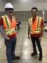

{kind=link}
| 2017.5.19: PhD student Geoff Nagy won Best Student paper at Canadian AI 2017. Well done, Geoff! | 
|
| 2017.9.28: The entire Autonomy Lab student body did great service to the community as volunteers at IROS 2017. Thanks very much, folks. IROS Vancouver was a great success and you were a very important part of that. |  |
| 2017.5.19: PhD student Geoff Nagy won Best Student paper at Canadian AI 2017. Well done, Geoff! |
|
| 2017.4.3: Congratulations to Lingkang Zhang who successfully defended his MSc today. | 
|
| 2017.3.25: Congratulations to Mani Monajjemi who was awarded the Honourable Mention for the CIPPRS Doctoral Dissertation Award 2016. | 
|
| 2017.3.15: Richard Vaughan with colleagues Alex Thornton (Exeter, UK) and Nick Ouellette (Stanford, USA) was awarded a US $1M research grant from the Human Frontier Science Program to study the heterogenous structure of animal flocks. This project builds on Alex's previous work on corvid flocks. |
| 2016.12.23: Congratulations to Shokoofeh Pourmehr who successfully defended her PhD thesis today. | 
|
| 2016.8.19: Congratulations to Mani Monajjemi who successfully defended his PhD thesis today. Mani will join the next big thing this fall. |
|
| 2016.8.3: Congratulations to Seyed Abbas Sadat who successfully defended his PhD thesis today. Abbas will join the Bosch Research and Technology group this fall. | 
|
2014.9.1: Welcome new grad students Lingkang Zhang, Jacob Perron and Jack Thomas. Find them via the people page.
2013.11.15: Richard Vaughan will be the program chair of IROS 2017 in Vancouver. Hong Zhang is the General Chair.
2013.11.11: Two of our papers were nominated for prizes at IROS 2013, with Mani Monajjemi's paper "HRI in the sky: Creating and commanding teams of uavs with a vision-mediated gestural interface." winning the "Japan Toy Culture Foundation Novel Technology Paper Award for Amusement Culture" category, and Shokofeh Pourmehr nomimated in the "New Technology Foundation Award for Entertainment Robots and Systems" category. See both papers on our publications page.
2015.1.1: Richard Vaughan was elected to the managing committee of the IEEE Robotics and Automation Society.
2013.5.31: Jens Wawerla will be joining us as a University Research Associate from 1 July 2013. Jens will do basic and applied research on UAVs and long-term autonomy. Thanks to BGC Engineering and NCFRN for funding to make this possible.
2013.2.25: We are proud to be part of the NSERC Canadian Field Robotics Network, a partnership between many excellent researchers and companies, led by Greg Dudek of McGill. We meet every spring somewhere in Canada for a week-long field trial.
2011.3.14: MSc student Brian Milligan won the prize for Best Video at HRI'11 with his video Selecting and Commanding Groups of Robots Using Vision.
2010.12.17: Congratulations to Pante a Jabbari Taleghani who successfully defended her MSc thesis "Isolating sub-populations to exploit locality in discounted robot foraging" today, becoming the 6th grad student to graduate from the lab in a year!
2011.1.11: MSc student Brian Milligan had his video Selecting and Commanding Groups of Robots Using Vision accepted to the video track of HRI'11.
2010.12.17: Congratulations to Abbas Sadat who successfully defended his MSc thesis "Reducing Spatial Interference in Ant-like Trail-following for multi-robot sytems." today.
2010.12.14: Congratulations to Yaroslav Litus who successfully defended his PhD thesis "Using Spatial Embededness and Physical Embodiment for Computation in Multi-robot Systems" today.
2010.11.25: Stage 4.0.0 is released today. Get it from the new GitHub download page.
2010.5.12: Congratulations to Jens Wawerla who successfully defended his PhD thesis "Task-Switching for Self-Sufficient Robots" yesterday.
{kind=link}